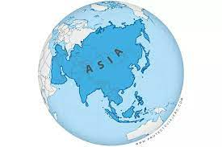

|  | Asia es el continente más grande y poblado de la Tierra.1 Con 44,6 millones de km² aproximadamente,2 representa el 8,7 % de la superficie de la tierra[cita requerida] y el 30 % de las tierras emergidas.1 |
| En agosto de 2023 tiene alrededor de 4757 millones de habitantes, que representan el 59 % de la población mundial.3 Se extiende sobre la mitad oriental del hemisferio norte, desde el océano Glacial Ártico, al norte, hasta el océano Índico, al sur. Limita, al oeste con los montes Urales (Rusia), y al este con el océano Pacífico. Asia es la cuna de muchas civilizaciones antiguas como la mesopotámica, la india y la china, entre otras. | |